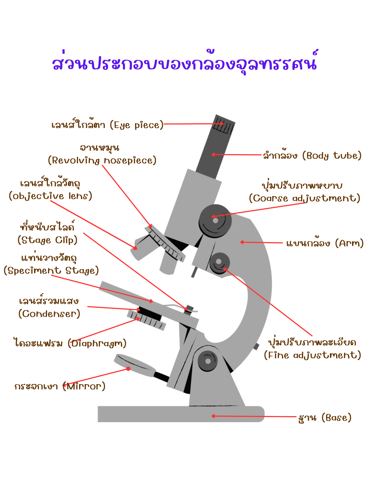

ขั้นตอนการใช้งานกล้องจุลทรรศน์
- การวางกล้อง: วางกล้องจุลทรรศน์บนโต๊ะที่มั่นคง และหมุนเลนส์วัตถุกำลังขยายต่ำสุด (4x) ให้ตรงกับลำกล้อง
- การเปิดไฟ: เสียบปลั๊กและเปิดสวิตช์ไฟ ปรับไดอะแฟรม (Diaphragm) เพื่อเปิดให้แสงผ่านตามความเหมาะสม
- การวางสไลด์: นำสไลด์ตัวอย่างวางบนแท่นวางวัตถุ ใช้ที่หนีบสไลด์ยึดให้แน่น และปรับให้อยู่ตรงกลางแสง
- การหาภาพ: มองจากด้านข้าง ปรับปุ่มปรับภาพหยาบ (Coarse Adjustment) ให้แท่นวางวัตถุยกขึ้นใกล้เลนส์มากที่สุด
- การโฟกัสภาพ: มองผ่านเลนส์ตา ค่อยๆ หมุนปุ่มปรับภาพหยาบลงจนเริ่มเห็นภาพ แล้วใช้ปุ่มปรับภาพละเอียด (Fine Adjustment) เพื่อปรับให้ภาพคมชัด
- การเปลี่ยนกำลังขยาย: หากต้องการเพิ่มกำลังขยาย ให้หมุนจานหมุน (Revolving Nosepiece) ไปที่เลนส์กำลังขยายสูงขึ้น และใช้เฉพาะปุ่มปรับภาพละเอียดเท่านั้นในการโฟกัส